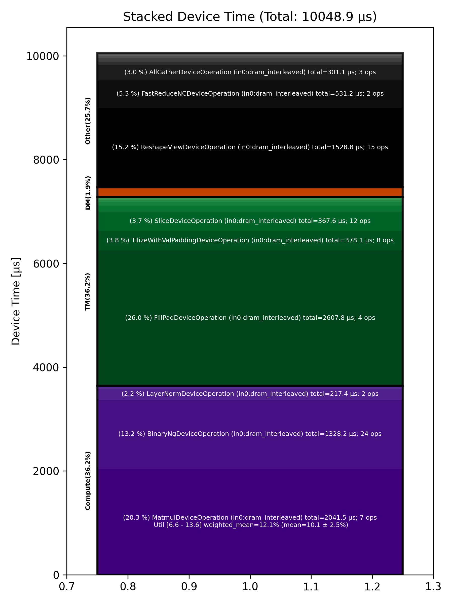

🚀 Performance Report 🚀 ======================== ID Total % Bound OP Code Device Device Time Op-to-Op Gap Cores DRAM DRAM % FLOPs FLOPs % Math Fidelity ------------------------------------------------------------------------------------------------------------------------------------------------------------------------- 27 0.0 % LayerNormDeviceOperation 17 108 μs 1 BF16, BF16 => BF16 61 0.0 % SLOW MatmulDeviceOperation 32 x 2880 x 512 20 44 μs 1 μs 16 39 GB/s 13.5 % 2.2 TFLOPs 6.6 % HiFi2 BF16 x BFP8 => BF16 95 0.0 % ReshapeViewDeviceOperation 10 12 μs 1 μs 72 BF16 => BF16 107 0.0 % SliceDeviceOperation 29 5 μs 1 μs 72 BF16 => BF16 139 0.0 % BinaryNgDeviceOperation 29 15 μs 1 μs 72 BF16, BF16 => BF16 171 0.0 % SliceDeviceOperation 29 5 μs 1 μs 72 BF16 => BF16 221 0.0 % BinaryNgDeviceOperation 19 16 μs 1 μs 72 BF16, BF16 => BF16 239 0.0 % BinaryNgDeviceOperation 6 6 μs 1 μs 72 BF16, BF16 => BF16 289 0.0 % BinaryNgDeviceOperation 8 15 μs 1 μs 72 BF16, BF16 => BF16 321 0.0 % BinaryNgDeviceOperation 8 16 μs 1 μs 72 BF16, BF16 => BF16 346 0.0 % BinaryNgDeviceOperation 16 6 μs 1 μs 72 BF16, BF16 => BF16 358 0.0 % ConcatDeviceOperation 3 7 μs 1 μs 72 BF16, BF16 => BF16 399 0.0 % SLOW MatmulDeviceOperation 32 x 2880 x 64 26 31 μs 1 μs 2 12 GB/s 4.2 % 0.4 TFLOPs 9.2 % HiFi2 BF16 x BFP8 => BF16 448 0.0 % ReshapeViewDeviceOperation 9 4 μs 1 μs 32 BF16 => BF16 465 0.0 % SliceDeviceOperation 4 2 μs 96 μs 16 BF16 => BF16 483 0.0 % PermuteDeviceOperation 25 4 μs 95 μs 16 BF16 => BF16 524 0.0 % BinaryNgDeviceOperation 30 5 μs 169 μs 72 BF16, BF16 => BF16 567 0.0 % SliceDeviceOperation 14 2 μs 250 μs 16 BF16 => BF16 598 0.0 % PermuteDeviceOperation 15 4 μs 247 μs 16 BF16 => BF16 632 0.0 % BinaryNgDeviceOperation 13 5 μs 92 μs 72 BF16, BF16 => BF16 647 0.0 % BinaryNgDeviceOperation 2 3 μs 176 μs 72 BF16, BF16 => BF16 680 0.0 % BinaryNgDeviceOperation 1 5 μs 259 μs 72 BF16, BF16 => BF16 731 0.0 % BinaryNgDeviceOperation 17 5 μs 99 μs 72 BF16, BF16 => BF16 768 0.0 % BinaryNgDeviceOperation 9 3 μs 152 μs 72 BF16, BF16 => BF16 775 0.0 % ConcatDeviceOperation 2 2 μs 99 μs 32 BF16, BF16 => BF16 819 0.0 % InterleavedToShardedDeviceOperation 21 1 μs 179 μs 16 BF16 => BF16 847 0.0 % PagedUpdateCacheDeviceOperation 6 4 μs 239 μs 16 BF16, BF16 => BF16 885 0.0 % SLOW MatmulDeviceOperation 32 x 2880 x 64 29 30 μs 341 μs 2 12 GB/s 4.3 % 0.4 TFLOPs 9.5 % HiFi2 BF16 x BFP8 => BF16 918 0.0 % ReshapeViewDeviceOperation 15 4 μs 116 μs 32 BF16 => BF16 943 0.0 % PermuteDeviceOperation 6 4 μs 162 μs 32 BF16 => BF16 982 0.0 % InterleavedToShardedDeviceOperation 15 1 μs 111 μs 16 BF16 => BF16 1022 0.0 % PagedUpdateCacheDeviceOperation 11 4 μs 326 μs 16 BF16, BF16 => BF16 1045 0.0 % PermuteDeviceOperation 23 8 μs 100 μs 72 BF16 => BF16 1071 0.0 % SdpaDecodeDeviceOperation 6 16 μs 229 μs 72 BF16, BF16 => BF16 1118 0.0 % PermuteDeviceOperation 11 22 μs 178 μs 72 BF16 => BF16 1129 0.0 % ReshapeViewDeviceOperation 0 14 μs 219 μs 16 BF16 => BF16 1175 0.0 % SLOW MatmulDeviceOperation 32 x 512 x 2880 31 15 μs 374 μs 45 112 GB/s 39.0 % 6.3 TFLOPs 13.6 % HiFi4 BF16 x BFP8 => BF16 1201 0.0 % AllGatherDeviceOperation 0 69 μs 357 μs 24 BF16 => BF16 1219 0.0 % FillPadDeviceOperation 25 155 μs 20 μs 8 BF16 => BF16 1254 0.0 % FastReduceNCDeviceOperation 3 10 μs 47 μs 72 BF16 => BF16 1283 0.0 % SliceDeviceOperation 25 3 μs 235 μs 72 BF16 => BF16 1324 0.0 % BinaryNgDeviceOperation 30 5 μs 117 μs 72 BF16, BF16 => BF16 1375 0.0 % ReshapeViewDeviceOperation 10 45 μs 148 μs 72 BF16 => BF16 1384 0.0 % BinaryNgDeviceOperation 1 50 μs 208 μs 72 BF16, BF16 => BF16 1428 0.0 % LayerNormDeviceOperation 22 110 μs 58 μs 16 BF16, BF16 => BF16 1450 0.0 % ReshapeViewDeviceOperation 28 29 μs 31 μs 72 BF16 => BF16 1497 0.0 % UntilizeWithUnpaddingDeviceOperation 12 9 μs 67 μs 45 BF16 => BF16 1514 0.0 % RepeatDeviceOperation 28 60 μs 166 μs 72 BF16 => BF16 1541 0.0 % TilizeWithValPaddingDeviceOperation 27 292 μs 36 μs 45 BF16 => BF16 1601 0.0 % SLOW MatmulDeviceOperation 32 x 2880 x 736 11 1,393 μs 106 μs 23 54 GB/s 18.8 % 3.1 TFLOPs 13.2 % HiFi4 BF16 x BFP8 => BF16 1624 0.0 % BinaryNgDeviceOperation 13 21 μs 1 μs 72 BF16, BF16 => BF16 1664 0.0 % UntilizeWithUnpaddingDeviceOperation 9 24 μs 1 μs 32 BF16 => BF16 1677 0.0 % SliceDeviceOperation 31 155 μs 1 μs 72 BF16 => BF16 1703 0.0 % TilizeWithValPaddingDeviceOperation 2 28 μs 1 μs 32 BF16 => BF16 1741 0.0 % UnaryDeviceOperation 31 9 μs 1 μs 72 BF16 => BF16 1763 0.0 % BinaryNgDeviceOperation 25 18 μs 1 μs 72 BF16, BF16 => BF16 1813 0.0 % UntilizeWithUnpaddingDeviceOperation 23 24 μs 1 μs 32 BF16 => BF16 1849 0.0 % SliceDeviceOperation 12 154 μs 1 μs 72 BF16 => BF16 1860 0.0 % TilizeWithValPaddingDeviceOperation 26 28 μs 1 μs 32 BF16 => BF16 1893 0.0 % UnaryDeviceOperation 27 9 μs 1 μs 72 BF16 => BF16 1931 0.0 % BinaryNgDeviceOperation 29 18 μs 248 μs 72 BF16, BF16 => BF16 1984 0.0 % UnaryDeviceOperation 9 12 μs 243 μs 72 BF16 => BF16 1999 0.0 % BinaryNgDeviceOperation 6 14 μs 89 μs 72 BF16, BF16 => BF16 2034 0.0 % BinaryNgDeviceOperation 20 14 μs 156 μs 72 BF16, BF16 => BF16 2072 0.0 % SLOW MatmulDeviceOperation 32 x 384 x 2880 5 496 μs 542 μs 45 85 GB/s 29.4 % 4.6 TFLOPs 9.9 % HiFi4 BF16 x BFP8 => BF16 2097 0.0 % ReduceScatterDeviceOperation 0 178 μs 74 μs 24 BF16 => BF16 2129 0.0 % AllGatherDeviceOperation 0 178 μs 242 μs 40 BF16 => BF16 2155 0.0 % BinaryNgDeviceOperation 29 87 μs 1 μs 72 BF16, BF16 => BF16 2209 0.0 % ReshapeViewDeviceOperation 8 1,247 μs 43 μs 72 BF16 => BF16 2234 0.0 % TypecastDeviceOperation 16 56 μs 1 μs 72 BF16 => FP32 2249 0.0 % ReshapeViewDeviceOperation 0 47 μs 1 μs 72 FP32 => FP32 2280 0.0 % SLOW MatmulDeviceOperation 32 x 2880 x 32 1 33 μs 1 μs 1 14 GB/s 5.0 % 0.2 TFLOPs 8.8 % HiFi2 FP32 x BFP8 => FP32 2321 0.0 % TypecastDeviceOperation 4 2 μs 2 μs 1 FP32 => BF16 2366 0.0 % FillPadDeviceOperation 11 3 μs 2 μs 1 BF16 => BF16 2395 0.0 % PadDeviceOperation 17 37 μs 1 μs 2 BF16 => BF16 2422 0.0 % FillPadDeviceOperation 15 5 μs 2 μs 1 BF16 => BF16 2440 0.0 % TopKDeviceOperation 1 44 μs 2 μs 1 BF16 => BF16 2471 0.0 % SliceDeviceOperation 2 1 μs 130 μs 1 BF16 => BF16 2511 0.0 % SliceDeviceOperation 6 1 μs 87 μs 1 UINT16 => UINT16 2538 0.0 % TypecastDeviceOperation 28 2 μs 182 μs 1 UINT16 => INT32 2568 0.0 % ReshapeViewDeviceOperation 1 5 μs 100 μs 16 INT32 => INT32 2598 0.0 % UntilizeWithUnpaddingDeviceOperation 3 3 μs 178 μs 16 INT32 => INT32 2657 0.0 % UntilizeWithUnpaddingDeviceOperation 8 3 μs 245 μs 16 INT32 => INT32 2681 0.0 % PermuteDeviceOperation 12 3 μs 80 μs 16 INT32 => INT32 2692 0.0 % PermuteDeviceOperation 26 3 μs 179 μs 16 INT32 => INT32 2750 0.0 % ConcatDeviceOperation 11 2 μs 85 μs 32 INT32, INT32 => INT32 2771 0.0 % PermuteDeviceOperation 21 3 μs 196 μs 16 INT32 => INT32 2810 0.0 % TilizeWithValPaddingDeviceOperation 16 7 μs 100 μs 16 INT32 => INT32 2845 0.0 % SoftmaxDeviceOperation 19 24 μs 308 μs 72 BF16 => BF16 2865 0.0 % AllGatherDeviceOperation 0 54 μs 573 μs 24 INT32 => INT32 2882 0.0 % AllBroadcastDeviceOperation 8 38 μs 221 μs 4 BF16 => BF16 2928 0.0 % UntilizeWithUnpaddingDeviceOperation 5 7 μs 114 μs 1 BF16 => BF16 2950 0.0 % UntilizeWithUnpaddingDeviceOperation 3 7 μs 151 μs 1 BF16 => BF16 2990 0.0 % UntilizeWithUnpaddingDeviceOperation 7 7 μs 74 μs 1 BF16 => BF16 3034 0.0 % UntilizeWithUnpaddingDeviceOperation 16 7 μs 205 μs 1 BF16 => BF16 3067 0.0 % ConcatDeviceOperation 17 2 μs 238 μs 64 BF16, BF16 => BF16 3087 0.0 % TilizeWithValPaddingDeviceOperation 6 5 μs 83 μs 2 BF16 => BF16 3132 0.0 % ReshapeViewDeviceOperation 18 10 μs 194 μs 8 INT32 => INT32 3156 0.0 % SliceDeviceOperation 22 2 μs 240 μs 8 INT32 => INT32 3175 0.0 % UntilizeWithUnpaddingDeviceOperation 2 14 μs 96 μs 8 INT32 => INT32 3218 0.0 % SliceDeviceOperation 20 4 μs 181 μs 72 INT32 => INT32 3259 0.0 % TilizeWithValPaddingDeviceOperation 17 8 μs 221 μs 8 INT32 => INT32 3279 0.0 % BinaryNgDeviceOperation 6 11 μs 104 μs 72 INT32, INT32 => INT32 3322 0.0 % BinaryNgDeviceOperation 16 3 μs 151 μs 72 INT32, INT32 => INT32 3344 0.0 % ReshapeViewDeviceOperation 5 7 μs 262 μs 8 INT32 => INT32 3393 0.0 % ReshapeViewDeviceOperation 8 3 μs 82 μs 8 BF16 => BF16 3421 0.0 % UntilizeWithUnpaddingDeviceOperation 19 7 μs 175 μs 1 INT32 => INT32 3449 0.0 % UntilizeWithUnpaddingDeviceOperation 12 6 μs 84 μs 1 BF16 => BF16 3462 0.0 % ScatterDeviceOperation 3 60 μs 173 μs 1 BF16, INT32 => BF16 3513 0.0 % TilizeWithValPaddingDeviceOperation 12 5 μs 52 μs 64 BF16 => BF16 3551 99.4 % ReshapeViewDeviceOperation 10 23 μs 4,480,931 μs 2 BF16 => BF16 3557 0.0 % UntilizeDeviceOperation 27 4 μs 289 μs 2 BF16 => BF16 3592 0.0 % MeshPartitionDeviceOperation 1 2 μs 1,911 μs 16 BF16 => BF16 3634 0.0 % TilizeWithValPaddingDeviceOperation 20 4 μs 161 μs 1 BF16 => BF16 3652 0.0 % TransposeDeviceOperation 26 2 μs 295 μs 72 BF16 => BF16 3705 0.0 % ReshapeViewDeviceOperation 12 50 μs 347 μs 72 BF16 => BF16 3734 0.0 % BinaryNgDeviceOperation 15 938 μs 121 μs 72 BF16, BF16 => BF16 3772 0.1 % FillPadDeviceOperation 18 2,445 μs 1 μs 72 BF16 => BF16 3809 0.0 % FastReduceNCDeviceOperation 8 521 μs 1 μs 72 BF16 => BF16 3839 0.0 % SliceDeviceOperation 10 34 μs 1 μs 72 BF16 => BF16 3872 0.0 % BinaryNgDeviceOperation 9 48 μs 1 μs 72 BF16, BF16 => BF16 3890 0.0 % ReshapeViewDeviceOperation 20 29 μs 1 μs 72 BF16 => BF16 ------------------------------------------------------------------------------------------------------------------------------------------------------------------------- 100.0 % 122 device ops, 0 host ops, 0 signposts 10,049 μs 4,497,170 μs 📊 Stacked report 📊 ==================== Total % Op Code Device Time Sum Op Count Op Category Min FLOPs Max FLOPs Mean FLOPs Std FLOPs Weighted Mean FLOPs ------------------------------------------------------------------------------------------------------------------------------------------------------------------------------ 25.95 % FillPadDeviceOperation (in0:dram_interleaved) 2,607.79 μs 4 TM 20.32 % MatmulDeviceOperation (in0:dram_interleaved) 2,041.52 μs 7 Compute 6.59 % 13.56 % 10.11 % 2.47 % 12.06 % 15.21 % ReshapeViewDeviceOperation (in0:dram_interleaved) 1,528.78 μs 15 Other 13.22 % BinaryNgDeviceOperation (in0:dram_interleaved) 1,328.24 μs 24 Compute 5.29 % FastReduceNCDeviceOperation (in0:dram_interleaved) 531.16 μs 2 Other 3.76 % TilizeWithValPaddingDeviceOperation (in0:dram_interleaved) 378.07 μs 8 TM 3.66 % SliceDeviceOperation (in0:dram_interleaved) 367.55 μs 12 TM 3.00 % AllGatherDeviceOperation (in0:dram_interleaved) 301.13 μs 3 Other 2.16 % LayerNormDeviceOperation (in0:dram_interleaved) 217.38 μs 2 Compute 1.78 % ReduceScatterDeviceOperation (in0:dram_interleaved) 178.44 μs 1 DM 1.18 % UntilizeWithUnpaddingDeviceOperation (in0:dram_interleaved) 119.03 μs 12 TM 0.60 % TypecastDeviceOperation (in0:dram_interleaved) 60.34 μs 3 TM 0.60 % RepeatDeviceOperation (in0:dram_interleaved) 60.25 μs 1 Other 0.59 % ScatterDeviceOperation (in0:dram_interleaved) 59.57 μs 1 Other 0.49 % PermuteDeviceOperation (in0:dram_interleaved) 49.68 μs 8 TM 0.44 % TopKDeviceOperation (in0:dram_interleaved) 44.08 μs 1 Other 0.38 % AllBroadcastDeviceOperation (in0:dram_interleaved) 38.42 μs 1 Other 0.37 % PadDeviceOperation (in0:dram_interleaved) 36.72 μs 1 TM 0.30 % UnaryDeviceOperation (in0:dram_interleaved) 30.62 μs 3 Compute 0.23 % SoftmaxDeviceOperation (in0:dram_interleaved) 23.59 μs 1 Compute 0.16 % SdpaDecodeDeviceOperation (in0:dram_interleaved) 15.88 μs 1 Other 0.13 % ConcatDeviceOperation (in0:dram_interleaved) 12.66 μs 4 TM 0.08 % PagedUpdateCacheDeviceOperation (in0:dram_interleaved) 8.31 μs 2 DM 0.04 % UntilizeDeviceOperation (in0:dram_interleaved) 4.03 μs 1 TM 0.02 % InterleavedToShardedDeviceOperation (in0:dram_interleaved) 2.10 μs 2 DM 0.02 % TransposeDeviceOperation (in0:dram_interleaved) 1.81 μs 1 TM 0.02 % MeshPartitionDeviceOperation (in0:dram_interleaved) 1.75 μs 1 Other ------------------------------------------------------------------------------------------------------------------------------------------------------------------------------
